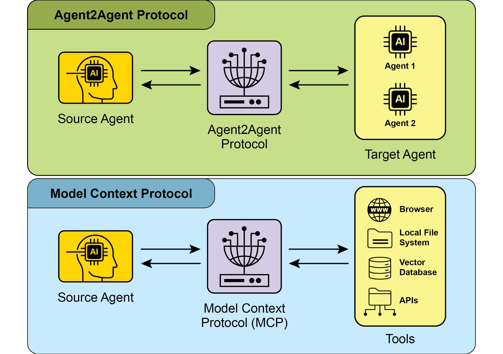
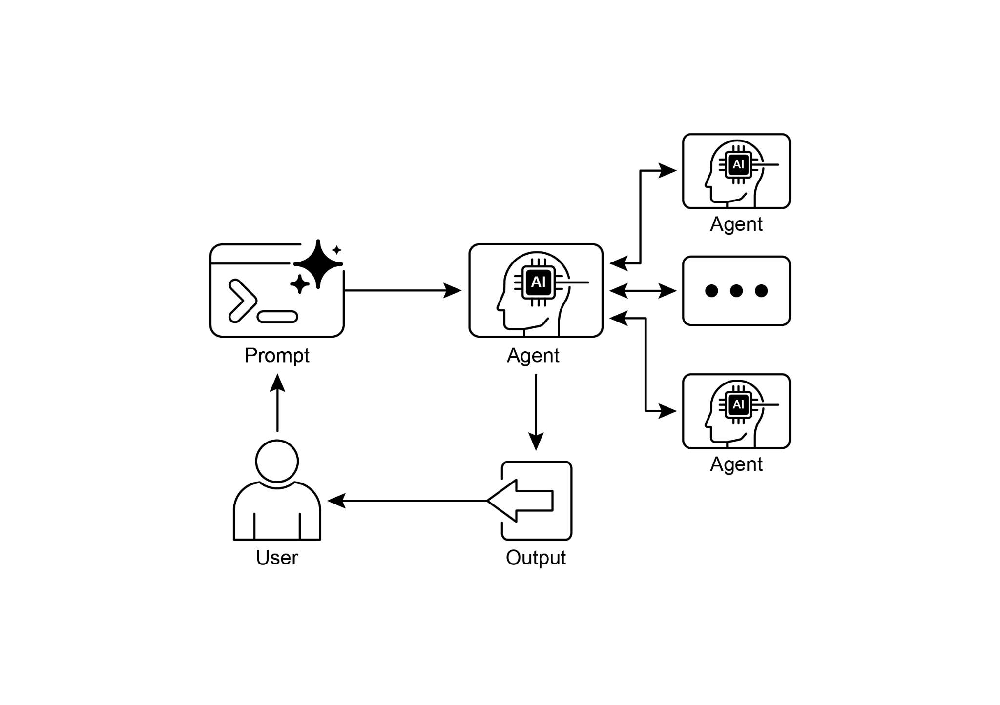

读书 · Agentic Design Patterns · 中英对照
第 15 章 · 智能体间通信 Inter-Agent Communication (A2A)
Chapter 15: Inter-Agent Communication · 《Agentic Design Patterns》 · Antonio Gulli · 2025
介绍Google A2A开放协议，让不同框架构建的智能体互相发现、委派任务并协作。
← 返回导读 原书 PDF · 第229页起 上一章:第14章 下一章:第16章
本章要点
① A2A是HTTP上的开放标准，实现跨框架智能体互操作 ① Agent Card是智能体数字身份，描述能力、端点与认证 ① 支持同步请求、异步轮询、SSE流式与Webhook推送 ① A2A负责智能体间协调，MCP负责对接外部工具与数据
本章一图流
A2A开放协议HTTP上的跨框架互操作标准→Agent Card数字身份：能力、端点、认证→四种通信模式同步、轮询、SSE、Webhook→A2A与MCP分工A2A协调智能体，MCP接工具→发现委派协作异构智能体协同完成任务
A2A用Agent Card让异构智能体互相发现，再按需选通信模式委派任务、协作完成。
原书插图


本章划线句
划线句(逐字校验)
"The Agent2Agent (A2A) protocol is an open standard designed to enable communication and collaboration between different AI agent frameworks."
为什么值得划线:点明A2A的核心定位：跨框架互操作开放标准
划线句(逐字校验)
"An agent's digital identity is defined by its Agent Card, usually a JSON file."
为什么值得划线:Agent Card是发现与交互的关键机制
划线句(逐字校验)
"While MCP focuses on structuring context for agents and their interaction with external data and tools, A2A facilitates coordination and communication among agents, enabling task delegation and collaboration."
为什么值得划线:清晰区分A2A与MCP的互补分工
正文(英中对照)
text
Chapter 15: Inter-Agent Communication
(A2A)"Individual AI agents often face limitations when tackling complex, multifaceted problems, even with advanced capabilities. To overcome this, Inter-Agent Communication (A2A) enables diverse AI agents, potentially built with different frameworks, to collaborate effectively. This collaboration involves seamless coordination, task delegation, and information exchange. Google's A2A protocol is an open standard designed to facilitate this universal communication. This chapter will explore A2A, its practical applications, and its implementation within the Google ADK. Inter-Agent Communication Pattern Overview The Agent2Agent (A2A) protocol is an open standard designed to enable communication and collaboration between different AI agent frameworks."
单个 AI 智能体（AI agent）在处理复杂、多层面的问题时往往面临局限，即使具备先进能力也是如此。为克服这一点，智能体间通信（Inter-Agent Communication，A2A）使可能基于不同框架构建的多样化 AI 智能体能够有效协作。这种协作涉及无缝协调、任务委派和信息交换。Google 的 A2A 协议是一项旨在促进这种通用通信的开放标准。本章将探讨 A2A、其实际应用以及在 Google ADK 中的实现。智能体间通信模式概述 Agent2Agent（A2A）协议是一项开放标准，旨在实现不同 AI 智能体框架之间的通信与协作。
导读注:点出 A2A 作为开放标准解决单智能体局限，并引出 Google ADK 实现。
"It ensures interoperability, allowing AI agents developed with technologies like LangGraph, CrewAI, or Google ADK to work together regardless of their origin or framework differences. A2A is supported by a range of technology companies and service providers, including Atlassian, Box, LangChain, MongoDB, Salesforce, SAP, and ServiceNow. Microsoft plans to integrate A2A into Azure AI Foundry and Copilot Studio, demonstrating its commitment to open protocols. Additionally, Auth0 and SAP are integrating A2A support into their platforms and agents. As an open-source protocol, A2A welcomes community contributions to facilitate its evolution and widespread adoption."
它确保了互操作性，使使用 LangGraph、CrewAI 或 Google ADK 等技术开发的 AI agent 能够协同工作，无论其来源或框架差异如何。A2A 得到了一系列技术公司和服务提供商的支持，包括 Atlassian、Box、LangChain、MongoDB、Salesforce、SAP 和 ServiceNow。Microsoft 计划将 A2A 集成到 Azure AI Foundry 和 Copilot Studio 中，彰显其对开放协议的承诺。此外，Auth0 和 SAP 正在将 A2A 支持集成到其平台和 agent 中。作为开源协议，A2A 欢迎社区贡献，以促进其演进和广泛采用。
导读注:A2A 获多家大厂支持，Microsoft 将其集成进 Azure AI Foundry 最值得关注。
"Core Concepts of A2A The A2A protocol provides a structured approach for agent interactions, built upon several core concepts. A thorough grasp of these concepts is crucial for anyone developing or integrating with A2A-compliant systems."
A2A 的核心概念 A2A 协议为智能体（agent）交互提供了一种结构化方法，它建立在若干核心概念之上。对于任何开发或集成符合 A2A 规范的系统的人来说，透彻理解这些概念至关重要。
导读注:点明 A2A 协议建立在核心概念之上，理解它们是开发与集成的前提。
"The foundational pillars of A2A include Core Actors, Agent Card, Agent Discovery, Communication and Tasks, Interaction mechanisms, and Security, all of which will be reviewed in detail. 1 Core Actors: A2A involves three main entities: ● User: Initiates requests for agent assistance. ● A2A Client (Client Agent): An application or AI agent that acts on the user's behalf to request actions or information. ● A2A Server (Remote Agent): An AI agent or system that provides an HTTP endpoint to process client requests and return results. The remote agent operates as an "opaque" system, meaning the client does not need to understand its internal operational details."
A2A 的基础支柱包括核心参与者（Core Actors）、Agent Card、Agent 发现（Agent Discovery）、通信与任务（Communication and Tasks）、交互机制（Interaction mechanisms）以及安全性（Security），这些都将被详细审视。1 核心参与者：A2A 涉及三个主要实体：● 用户（User）：发起对 agent 协助的请求。● A2A 客户端（Client Agent）：代表用户请求操作或信息的应用程序或 AI agent。● A2A 服务器（Remote Agent）：提供 HTTP 端点以处理客户端请求并返回结果的 AI agent 或系统。远程 agent 作为“不透明”系统运行，这意味着客户端无需理解其内部运行细节。
导读注:点明 A2A 三大核心参与者，并强调远程 agent 的“不透明”特性。
"Agent Card: An agent's digital identity is defined by its Agent Card, usually a JSON file. This file contains key information for client interaction and automatic discovery, including the agent's identity, endpoint URL, and version. It also details supported capabilities like streaming or push notifications, specific skills, default input/output modes, and authentication requirements. Below is an example of an Agent Card for a WeatherBot."
Agent Card（智能体卡片）：智能体的数字身份由其 Agent Card 定义，通常是一个 JSON 文件。该文件包含用于客户端交互和自动发现的关键信息，包括智能体的身份、端点 URL 和版本。它还详细说明了所支持的能力，如流式传输或推送通知、特定技能、默认输入/输出模式以及认证要求。下面是一个 WeatherBot 的 Agent Card 示例。
导读注:Agent Card 是智能体的数字身份证，JSON 格式承载发现与交互所需的关键元数据。
text
{
"name": "WeatherBot",
"description": "Provides accurate weather forecasts and historical
data.",
"url": "http://weather-service.example.com/a2a",
"version": "1.0.0",
"capabilities": {
"streaming": true,
"pushNotifications": false,
"stateTransitionHistory": true
},
"authentication": {
"schemes": [
"apiKey"
]
},
"defaultInputModes": [
"text"
],
"defaultOutputModes": [
"text"
],
"skills": [
{
"id": "get_current_weather",text
"name": "Get Current Weather",
"description": "Retrieve real-time weather for any location.",
"inputModes": [
"text"
],
"outputModes": [
"text"
],
"examples": [
"What's the weather in Paris?",
"Current conditions in Tokyo"
],
"tags": [
"weather",
"current",
"real-time"
]
},
{
"id": "get_forecast",
"name": "Get Forecast",
"description": "Get 5-day weather predictions.",
"inputModes": [
"text"
],
"outputModes": [
"text"
],
"examples": [
"5-day forecast for New York",
"Will it rain in London this weekend?"
],
"tags": [
"weather",
"forecast",
"prediction"
]
}
]
}"Agent discovery: it allows clients to find Agent Cards, which describe the capabilities of available A2A Servers. Several strategies exist for this process: ● Well-Known URI: Agents host their Agent Card at a standardized path (e.g., 3 /.well-known/agent.json). This approach offers broad, often automated, accessibility for public or domain-specific use. ● Curated Registries: These provide a centralized catalog where Agent Cards are published and can be queried based on specific criteria. This is well-suited for enterprise environments needing centralized management and access control. ● Direct Configuration: Agent Card information is embedded or privately shared."
Agent 发现（Agent discovery）：它允许客户端找到 Agent Card（智能体卡片），这些卡片描述了可用 A2A 服务器（A2A Servers）的能力。此过程存在多种策略：● 知名 URI（Well-Known URI）：智能体将其 Agent Card 托管在标准化路径下（例如 /.well-known/agent.json）。这种方法为公共或特定域的使用提供了广泛且通常自动化的可访问性。● 精选注册表（Curated Registries）：这些注册表提供一个集中式目录，Agent Card 在此发布，并可根据特定条件进行查询。这非常适合需要集中管理和访问控制的企业环境。● 直接配置（Direct Configuration）：Agent Card 信息被嵌入或私下共享。
导读注:介绍 Agent 发现的三种策略：知名 URI、精选注册表、直接配置，各有适用场景。
"This method is appropriate for closely coupled or private systems where dynamic discovery isn't crucial. Regardless of the chosen method, it is important to secure Agent Card endpoints. This can be achieved through access control, mutual TLS (mTLS), or network restrictions, especially if the card contains sensitive (though non-secret) information. Communications and Tasks: In the A2A framework, communication is structured around asynchronous tasks, which represent the fundamental units of work for long-running processes. Each task is assigned a unique identifier and moves through a series of states—such as submitted, working, or completed—a design that supports parallel processing in complex operations."
该方法适用于紧密耦合或私有系统，在这些系统中动态发现并不关键。无论选择哪种方法，保护 Agent Card 端点都很重要。这可以通过访问控制、双向 TLS（mutual TLS, mTLS）或网络限制来实现，尤其是当卡片包含敏感（但非机密）信息时。通信与任务：在 A2A 框架中，通信围绕异步任务构建，这些任务是长时间运行流程的基本工作单元。每个任务被分配唯一标识符，并经历一系列状态——如已提交、进行中或已完成——这种设计支持复杂操作中的并行处理。
导读注:强调 Agent Card 端点需用 mTLS 等保护，并点出 A2A 以异步任务为工作单元。
"Communication between agents occurs through a Message. This communication contains attributes, which are key-value metadata describing the message (like its priority or creation time), and one or more parts, which carry the actual content being delivered, such as plain text, files, or structured JSON data. The tangible outputs generated by an agent during a task are called artifacts. Like messages, artifacts are also composed of one or more parts and can be streamed incrementally as results become available. All communication within the A2A framework is conducted over HTTP(S) using the JSON-RPC 2.0 protocol for payloads."
Agent 之间的通信通过 Message（消息）进行。这种通信包含 attributes（属性），即描述消息的键值元数据（如优先级或创建时间），以及一个或多个 parts（部分），承载实际传递的内容，例如纯文本、文件或结构化 JSON 数据。Agent 在任务期间生成的有形输出称为 artifacts（产物）。与消息一样，产物也由一个或多个部分构成，并可在结果可用时增量流式传输。A2A 框架内的所有通信均通过 HTTP(S) 进行，负载使用 JSON-RPC 2.0 协议。
导读注:厘清 Message、attributes、parts、artifacts 的关系，并点明增量流式传输与 JSON-RPC 2.0 传输基础。
"To maintain continuity across multiple interactions, a server-generated contextId is used to group related tasks and preserve context. Interaction Mechanisms: Request/Response (Polling) Server-Sent Events (SSE). A2A provides multiple interaction methods to suit a variety of AI application needs, each with a distinct mechanism: ● Synchronous Request/Response: For quick, immediate operations. In this model, the client sends a request and actively waits for the server to process it and return a complete response in a single, synchronous exchange. ● Asynchronous Polling: Suited for tasks that take longer to process. The client sends a request, and the server immediately acknowledges it with a "working" status and a task ID."
为了在多次交互之间保持连续性，使用服务器生成的 contextId（上下文标识）来对相关任务进行分组并保留上下文。交互机制：请求/响应（轮询）、服务器发送事件（SSE）。A2A 提供多种交互方法以满足各种 AI 应用需求，每种方法都有其独特的机制：● 同步请求/响应：适用于快速、即时的操作。在这种模式下，客户端发送请求，并主动等待服务器处理该请求，并在一次同步交换中返回完整响应。● 异步轮询：适用于处理时间较长的任务。客户端发送请求，服务器立即以“working”状态和任务 ID 进行确认。
导读注:contextId 维持多轮连续性，同步与异步机制按任务时长分工。
"The client is then free to perform other actions and can 4 periodically poll the server by sending new requests to check the status of the task until it is marked as "completed" or "failed." ● Streaming Updates (Server-Sent Events - SSE): Ideal for receiving real-time, incremental results. This method establishes a persistent, one-way connection from the server to the client. It allows the remote agent to continuously push updates, such as status changes or partial results, without the client needing to make multiple requests. ● Push Notifications (Webhooks): Designed for very long-running or resource-intensive tasks where maintaining a constant connection or frequent polling is inefficient."
随后客户端可以自由执行其他操作，并可通过发送新请求定期轮询服务器，以检查任务状态，直到任务被标记为 "completed" 或 "failed"。● 流式更新（Server-Sent Events - SSE）：适用于接收实时、增量结果。该方法建立从服务器到客户端的持久单向连接，允许远程 agent 持续推送更新（如状态变化或部分结果），而无需客户端发起多次请求。● 推送通知（Webhooks）：专为运行时间很长或资源密集型任务设计，此类场景下保持持续连接或频繁轮询效率低下。
导读注:三种异步任务结果获取方式：轮询、SSE 流式、Webhook 推送，按任务时长与实时性需求选择。
"The client can register a webhook URL, and the server will send an asynchronous notification (a "push") to that URL when the task's status changes significantly (e.g., upon completion). The Agent Card specifies whether an agent supports streaming or push notification capabilities. Furthermore, A2A is modality-agnostic, meaning it can facilitate these interaction patterns not just for text, but also for other data types like audio and video, enabling rich, multimodal AI applications. Both streaming and push notification capabilities are specified within the Agent Card."
客户端可以注册一个 webhook URL，当任务状态发生显著变化（例如完成时），服务器会向该 URL 发送异步通知（即"推送"）。Agent Card（智能体卡片）指定了智能体是否支持流式传输或推送通知能力。此外，A2A 是模态无关的，这意味着它不仅能促进文本的交互模式，还能支持音频、视频等其他数据类型，从而实现丰富的多模态 AI 应用。流式传输和推送通知能力均在 Agent Card 中指定。
导读注:A2A 的模态无关特性是其关键优势，可支撑多模态应用。
python
#Synchronous Request Example
{
"jsonrpc": "2.0",
"id": "1",
"method": "sendTask",
"params": {
"id": "task-001",
"sessionId": "session-001",
"message": {
"role": "user",
"parts": [
{
"type": "text",
"text": "What is the exchange rate from USD to EUR?"
}
]
},
"acceptedOutputModes": ["text/plain"],
"historyLength": 5
}
}"5 The synchronous request uses the sendTask method, where the client asks for and expects a single, complete answer to its query. In contrast, the streaming request uses the sendTaskSubscribe method to establish a persistent connection, allowing the agent to send back multiple, incremental updates or partial results over time."
5 同步请求使用 sendTask 方法，客户端请求并期望对其查询获得单个、完整的回答。相比之下，流式请求使用 sendTaskSubscribe 方法建立持久连接，允许 agent（智能体）随时间返回多个增量更新或部分结果。
导读注:对比同步与流式请求：sendTask 单次完整，sendTaskSubscribe 持久连接增量返回。
python
# Streaming Request Example
{
"jsonrpc": "2.0",
"id": "2",
"method": "sendTaskSubscribe",
"params": {
"id": "task-002",
"sessionId": "session-001",
"message": {
"role": "user",
"parts": [
{
"type": "text",
"text": "What's the exchange rate for JPY to GBP today?"
}
]
},
"acceptedOutputModes": ["text/plain"],
"historyLength": 5
}
}"Security: Inter-Agent Communication (A2A): Inter-Agent Communication (A2A) is a vital component of system architecture, enabling secure and seamless data exchange among agents. It ensures robustness and integrity through several built-in mechanisms. Mutual Transport Layer Security (TLS): Encrypted and authenticated connections are established to prevent unauthorized access and data interception, ensuring secure communication. Comprehensive Audit Logs: All inter-agent communications are meticulously recorded, detailing information flow, involved agents, and actions."
安全性：智能体间通信（Inter-Agent Communication, A2A）：智能体间通信（A2A）是系统架构的重要组成部分，能够在各智能体之间实现安全、无缝的数据交换。它通过若干内置机制确保鲁棒性与完整性。双向传输层安全（Mutual TLS）：建立加密且经过身份验证的连接，以防止未经授权的访问和数据拦截，从而确保通信安全。全面审计日志：所有智能体间通信均被细致记录，详细记载信息流向、涉及的智能体以及所执行的操作。
导读注:A2A 安全靠双向 TLS与全面审计日志双机制保障。
"This audit trail is crucial for accountability, troubleshooting, and security analysis. 6 Agent Card Declaration: Authentication requirements are explicitly declared in the Agent Card, a configuration artifact outlining the agent's identity, capabilities, and security policies. This centralizes and simplifies authentication management. Credential Handling: Agents typically authenticate using secure credentials like OAuth 2.0 tokens or API keys, passed via HTTP headers. This method prevents credential exposure in URLs or message bodies, enhancing overall security. A2A vs. MCP A2A is a protocol that complements Anthropic's Model Context Protocol (MCP) (see Fig. 1)."
该审计追踪对于问责、故障排查和安全分析至关重要。6 Agent Card 声明：认证要求明确声明在 Agent Card（智能体卡片）中，这是一种配置工件，概述了智能体的身份、能力和安全策略。这集中并简化了认证管理。凭证处理：智能体通常使用安全凭证（如 OAuth 2.0 令牌或 API 密钥）进行认证，并通过 HTTP 头传递。此方法可防止凭证在 URL 或消息体中暴露，从而增强整体安全性。A2A 与 MCP：A2A 是一种协议，与 Anthropic 的 Model Context Protocol (MCP) 相辅相成（见图 1）。
导读注:强调审计追踪与 Agent Card 集中认证管理的安全价值，并点出 A2A 与 MCP 的互补关系。
"While MCP focuses on structuring context for agents and their interaction with external data and tools, A2A facilitates coordination and communication among agents, enabling task delegation and collaboration. Fig.1: Comparison A2A and MCP Protocols The goal of A2A is to enhance efficiency, reduce integration costs, and foster innovation and interoperability in the development of complex, multi-agent AI 7 systems. Therefore, a thorough understanding of A2A's core components and operational methods is essential for its effective design, implementation, and application in building collaborative and interoperable AI agent systems.."
MCP 侧重于为 agent 及其与外部数据和工具的交互构建上下文结构，而 A2A 则促进 agent 之间的协调与通信，实现任务委派与协作。图1：A2A 与 MCP 协议对比。A2A 的目标是提升效率、降低集成成本，并在复杂多 agent AI 系统（multi-agent AI systems）的开发中促进创新与互操作性。因此，深入理解 A2A 的核心组件与运行方法，对于在构建协作且可互操作的 AI agent 系统中进行有效设计、实现与应用至关重要。
导读注:点明 A2A 与 MCP 的分工差异：一个管 agent 间协作，一个管上下文与工具。
"Practical Applications & Use Cases Inter-Agent Communication is indispensable for building sophisticated AI solutions across diverse domains, enabling modularity, scalability, and enhanced intelligence. ● Multi-Framework Collaboration: A2A's primary use case is enabling independent AI agents, regardless of their underlying frameworks (e.g., ADK, LangChain, CrewAI), to communicate and collaborate. This is fundamental for building complex multi-agent systems where different agents specialize in different aspects of a problem. ● Automated Workflow Orchestration: In enterprise settings, A2A can facilitate complex workflows by enabling agents to delegate and coordinate tasks."
实际应用与用例 智能体间通信(Inter-Agent Communication)对于跨不同领域构建复杂 AI 解决方案不可或缺,它实现了模块化、可扩展性和增强的智能。多框架协作:A2A 的主要用例是使独立 AI 智能体能够通信与协作,无论其底层框架为何(如 ADK、LangChain、CrewAI)。这对于构建复杂的多智能体系统至关重要,其中不同智能体专注于问题的不同方面。自动化工作流编排:在企业环境中,A2A 可通过使智能体能够委派和协调任务来促进复杂工作流。
导读注:点明 A2A 的核心价值:跨框架协作与工作流编排,是构建多智能体系统的关键。
"For instance, an agent might handle initial data collection, then delegate to another agent for analysis, and finally to a third for report generation, all communicating via the A2A protocol. ● Dynamic Information Retrieval: Agents can communicate to retrieve and exchange real-time information. A primary agent might request live market data from a specialized "data fetching agent," which then uses external APIs to gather the information and send it back. Hands-On Code Example Let's examine the practical applications of the A2A protocol."
例如，一个 agent 可能负责初始数据收集，然后委托给另一个 agent 进行分析，最后委托给第三个 agent 生成报告，所有这些都通过 A2A 协议进行通信。● 动态信息检索：agent 之间可以通信以检索和交换实时信息。一个主 agent 可能向专门的“数据获取 agent”请求实时市场数据，后者随后使用外部 API 收集信息并将其发回。动手代码示例 让我们考察 A2A 协议的实际应用。
导读注:展示 A2A 协议如何串联多 agent 分工与实时数据交换，并引出代码示例。
"The repository at https://github.com/google-a2a/a2a-samples/tree/main/samples provides examples in Java, Go, and Python that illustrate how various agent frameworks, such as LangGraph, CrewAI, Azure AI Foundry, and AG2, can communicate using A2A. All code in this repository is released under the Apache 2.0 license. To further illustrate A2A's core concepts, we will review code excerpts focusing on setting up an A2A Server using an ADK-based agent with Google-authenticated tools. Looking at https://github.com/google-a2a/a2a-samples/blob/main/samples/python/agents/birthd ay_planner_adk/calendar_agent/adk_agent.py"
位于 https://github.com/google-a2a/a2a-samples/tree/main/samples 的代码仓库提供了 Java、Go 和 Python 示例，展示 LangGraph、CrewAI、Azure AI Foundry 和 AG2 等各种 agent 框架如何通过 A2A 进行通信。该仓库中的所有代码均以 Apache 2.0 许可证发布。为进一步说明 A2A 的核心概念，我们将审阅一些代码片段，重点介绍如何使用基于 ADK 的 agent 和 Google 认证工具搭建 A2A Server（A2A 服务器）。请查看 https://github.com/google-a2a/a2a-samples/blob/main/samples/python/agents/birthd ay_planner_adk/calendar_agent/adk_agent.py
导读注:示例仓库覆盖多语言与多框架，重点演示用 ADK agent 搭建 A2A Server。
python
import datetime
from google.adk.agents import LlmAgent # type: ignore[import-untyped]
from google.adk.tools.google_api_tool import CalendarToolset # type:"8 ignore[import-untyped]"
8 ignore[import-untyped]
导读注:该段为代码注释指令，保留原样即可。
python
async def create_agent(client_id, client_secret) -> LlmAgent:
"""Constructs the ADK agent."""
toolset = CalendarToolset(client_id=client_id,
client_secret=client_secret)
return LlmAgent(
model='gemini-2.0-flash-001',
name='calendar_agent',
description="An agent that can help manage a user's calendar",
instruction=f"""
You are an agent that can help manage a user's calendar."Users will request information about the state of their calendar or to make changes to their calendar. Use the provided tools for interacting with the calendar API. If not specified, assume the calendar the user wants is the 'primary' calendar. When using the Calendar API tools, use well-formed RFC3339 timestamps."
用户会请求关于其日历状态的信息，或对其日历进行更改。使用提供的工具与日历 API 交互。如果未指定，假设用户想要的日历是 'primary' 日历。使用 Calendar API 工具时，使用格式良好的 RFC3339 时间戳。
导读注:强调默认使用 primary 日历，且时间戳必须符合 RFC3339 格式。
text
Today is {datetime.datetime.now()}.
""",
tools=await toolset.get_tools(),
)"This Python code defines an asynchronous function `create_agent` that constructs an ADK LlmAgent. It begins by initializing a `CalendarToolset` using the provided client credentials to access the Google Calendar API. Subsequently, an `LlmAgent` instance is created, configured with a specified Gemini model, a descriptive name, and instructions for managing a user's calendar. The agent is furnished with calendar tools from the `CalendarToolset`, enabling it to interact with the Calendar API and respond to user queries regarding calendar states or modifications. The agent's instructions dynamically incorporate the current date for temporal context."
这段 Python 代码定义了一个异步函数 `create_agent`，用于构建 ADK LlmAgent。它首先使用提供的客户端凭据初始化一个 `CalendarToolset`，以访问 Google Calendar API。随后，创建一个 `LlmAgent` 实例，配置指定的 Gemini 模型、描述性名称以及用于管理用户日历的指令。该 agent 配备了来自 `CalendarToolset` 的日历工具，使其能够与 Calendar API 交互，并响应用户关于日历状态或修改的查询。agent 的指令动态地纳入了当前日期，以提供时间上下文。
导读注:展示如何用 ADK 构建带日历工具的异步 LlmAgent，并注入当前日期。
"To illustrate how an agent is constructed, let's examine a key section from the calendar_agent found in the A2A samples on GitHub. The code below shows how the agent is defined with its specific instructions and tools."
为了说明 agent 是如何构建的，让我们来看一下 GitHub 上 A2A 示例中 calendar_agent 的一个关键部分。下面的代码展示了如何用特定的指令和工具来定义该 agent。
导读注:以 calendar_agent 为例，展示 agent 定义中指令与工具的配置方式。
"Please note that only the code required to explain this functionality is shown; you can access the complete file here: 9 https://github.com/a2aproject/a2a-samples/blob/main/samples/python/agents/birthda y_planner_adk/calendar_agent/__main__.py def main(host: str, port: int): # Verify an API key is set. # Not required if using Vertex AI APIs. if os.getenv('GOOGLE_GENAI_USE_VERTEXAI') != 'TRUE' and not os.getenv( 'GOOGLE_API_KEY' ): raise ValueError( 'GOOGLE_API_KEY environment variable not set and ' 'GOOGLE_GENAI_USE_VERTEXAI is not TRUE.' ) skill = AgentSkill( id='check_availability', name='Check Availability', description="Checks a user's availability for a time using their Google Calendar", tags=['calendar'], examples=['Am I free from 10am to 11am tomorrow?'], )"
请注意，此处仅展示了解释该功能所需的代码；你可以在此处访问完整文件：9 https://github.com/a2aproject/a2a-samples/blob/main/samples/python/agents/birthda y_planner_adk/calendar_agent/__main__.py def main(host: str, port: int): # 验证已设置 API key。 # 如果使用 Vertex AI API 则不需要。 if os.getenv('GOOGLE_GENAI_USE_VERTEXAI') != 'TRUE' and not os.getenv( 'GOOGLE_API_KEY' ): raise ValueError( 'GOOGLE_API_KEY environment variable not set and ' 'GOOGLE_GENAI_USE_VERTEXAI is not TRUE.' ) skill = AgentSkill( id='check_availability', name='Check Availability', description="Checks a user's availability for a time using their Google Calendar", tags=['calendar'], examples=['Am I free from 10am to 11am tomorrow?'], )
导读注:展示 AgentSkill 定义与 API key 校验，是构建日历查询技能的关键片段。
text
agent_card = AgentCard(
name='Calendar Agent',
description="An agent that can manage a user's calendar",
url=f'http://{host}:{port}/',
version='1.0.0',
defaultInputModes=['text'],
defaultOutputModes=['text'],
capabilities=AgentCapabilities(streaming=True),
skills=[skill],
)"adk_agent = asyncio.run(create_agent( client_id=os.getenv('GOOGLE_CLIENT_ID'), client_secret=os.getenv('GOOGLE_CLIENT_SECRET'), )) runner = Runner( app_name=agent_card.name, agent=adk_agent, artifact_service=InMemoryArtifactService(), session_service=InMemorySessionService(), memory_service=InMemoryMemoryService(), ) 10 agent_executor = ADKAgentExecutor(runner, agent_card)"
adk_agent = asyncio.run(create_agent( client_id=os.getenv('GOOGLE_CLIENT_ID'), client_secret=os.getenv('GOOGLE_CLIENT_SECRET'), )) runner = Runner( app_name=agent_card.name, agent=adk_agent, artifact_service=InMemoryArtifactService(), session_service=InMemorySessionService(), memory_service=InMemoryMemoryService(), ) 10 agent_executor = ADKAgentExecutor(runner, agent_card)
导读注:展示ADK Agent 的装配流程：创建 agent、配置 Runner 服务、封装执行器。
python
async def handle_auth(request: Request) -> PlainTextResponse:
await agent_executor.on_auth_callback(
str(request.query_params.get('state')), str(request.url)
)
return PlainTextResponse('Authentication successful.')"request_handler = DefaultRequestHandler( agent_executor=agent_executor, task_store=InMemoryTaskStore() ) a2a_app = A2AStarletteApplication( agent_card=agent_card, http_handler=request_handler ) routes = a2a_app.routes() routes.append( Route( path='/authenticate', methods=['GET'], endpoint=handle_auth, ) ) app = Starlette(routes=routes) uvicorn.run(app, host=host, port=port)"
request_handler = DefaultRequestHandler( agent_executor=agent_executor, task_store=InMemoryTaskStore() ) a2a_app = A2AStarletteApplication( agent_card=agent_card, http_handler=request_handler ) routes = a2a_app.routes() routes.append( Route( path='/authenticate', methods=['GET'], endpoint=handle_auth, ) ) app = Starlette(routes=routes) uvicorn.run(app, host=host, port=port)
导读注:代码片段展示如何组装 A2A 应用并追加认证路由。
python
if __name__ == '__main__':
main()"This Python code demonstrates setting up an A2A-compliant "Calendar Agent" for checking user availability using Google Calendar. It involves verifying API keys or Vertex AI configurations for authentication purposes. The agent's capabilities, including the "check_availability" skill, are defined within an AgentCard, which also specifies the agent's network address. Subsequently, an ADK agent is created, configured with in-memory services for managing artifacts, sessions, and memory. The code then initializes a Starlette web application, incorporates an authentication callback and the A2A protocol handler, and executes it using Uvicorn to expose the agent via HTTP."
这段 Python 代码演示了如何搭建一个符合 A2A 规范的"日历代理"(Calendar Agent),用于借助 Google Calendar 检查用户空闲情况。其中涉及为认证目的校验 API key 或 Vertex AI 配置。该代理的能力(包括 "check_availability" 技能)定义在 AgentCard 中,AgentCard 同时指定了代理的网络地址。随后创建一个 ADK 代理,并为其配置用于管理 artifact、session 和 memory 的内存服务。接着代码初始化一个 Starlette Web 应用,接入认证回调与 A2A 协议处理器,并用 Uvicorn 运行,从而通过 HTTP 暴露该代理。
导读注:展示如何用 ADK 与 A2A 协议把日历代理封装为 HTTP 服务
"These examples illustrate the process of building an A2A-compliant agent, from defining its capabilities to running it as a web service. By utilizing Agent Cards and ADK, developers can create interoperable AI agents capable of integrating with tools 11 like Google Calendar. This practical approach demonstrates the application of A2A in establishing a multi-agent ecosystem. Further exploration of A2A is recommended through the code demonstration at https://www.trickle.so/blog/how-to-build-google-a2a-project. Resources available at this link include sample A2A clients and servers in Python and JavaScript, multi-agent web applications, command-line interfaces, and example implementations for various agent frameworks."
这些示例展示了构建一个符合 A2A 规范的 agent 的完整过程，从定义其能力到将其作为 Web 服务运行。通过利用 Agent Card（智能体卡片）和 ADK，开发者可以创建能够与 Google Calendar 等工具 11 集成的可互操作 AI agent。这种实践方法演示了 A2A 在建立多 agent 生态系统中的应用。建议通过 https://www.trickle.so/blog/how-to-build-google-a2a-project 上的代码演示进一步探索 A2A。该链接提供的资源包括 Python 和 JavaScript 编写的示例 A2A 客户端与服务器、多 agent Web 应用、命令行界面，以及针对各种 agent 框架的示例实现。
导读注:Agent Card 与 ADK 是构建可互操作 A2A agent 的关键，文末附有完整代码资源。
"At a Glance What: Individual AI agents, especially those built on different frameworks, often struggle with complex, multi-faceted problems on their own. The primary challenge is the lack of a common language or protocol that allows them to communicate and collaborate effectively. This isolation prevents the creation of sophisticated systems where multiple specialized agents can combine their unique skills to solve larger tasks. Without a standardized approach, integrating these disparate agents is costly, time-consuming, and hinders the development of more powerful, cohesive AI solutions. Why: The Inter-Agent Communication (A2A) protocol provides an open, standardized solution for this problem."
概览 是什么：单个 AI agent（智能体），尤其是那些构建在不同框架上的 agent，往往难以独自应对复杂、多面的问题。主要挑战在于缺乏一种共同的语言或协议，使它们能够有效沟通与协作。这种隔离阻碍了构建复杂系统——即多个专业化 agent 能够结合各自独特技能来解决更大任务。没有标准化方法，集成这些异构 agent 成本高昂、耗时，并阻碍了更强大、更连贯的 AI 解决方案的开发。为什么：Agent 间通信（Inter-Agent Communication，A2A）协议为这一问题提供了开放、标准化的解决方案。
导读注:点出多 agent 协作的核心障碍是缺乏通用通信协议，A2A 正是为此而生。
"It is an HTTP-based protocol that enables interoperability, allowing distinct AI agents to coordinate, delegate tasks, and share information seamlessly, regardless of their underlying technology. A core component is the Agent Card, a digital identity file that describes an agent's capabilities, skills, and communication endpoints, facilitating discovery and interaction. A2A defines various interaction mechanisms, including synchronous and asynchronous communication, to support diverse use cases. By creating a universal standard for agent collaboration, A2A fosters a modular and scalable ecosystem for building complex, multi-agent Agentic systems."
这是一种基于 HTTP 的协议，可实现互操作性，让不同的 AI agent（智能体）能够无缝协调、委派任务并共享信息，而无需考虑其底层技术。核心组件是 Agent Card，这是一个数字身份文件，用于描述 agent 的能力、技能和通信端点，从而促进发现与交互。A2A 定义了多种交互机制，包括同步和异步通信，以支持多样化的用例。通过为 agent 协作创建通用标准，A2A 培育了一个模块化且可扩展的生态系统，用于构建复杂的多 agent Agentic 系统。
导读注:Agent Card 是 A2A 的发现与互操作核心，值得重点关注。
"Rule of thumb: Use this pattern when you need to orchestrate collaboration between two or more AI agents, especially if they are built using different frameworks (e.g., Google ADK, LangGraph, CrewAI). It is ideal for building complex, modular applications where specialized agents handle specific parts of a workflow, such as delegating data analysis to one agent and report generation to another. This pattern is also essential when an agent needs to dynamically discover and consume the capabilities of other agents to complete a task. 12 Visual summary Fig.2: A2A inter-agent communication pattern"
经验法则：当你需要协调两个或多个 AI agent（智能体）之间的协作时，尤其是当它们使用不同框架（例如 Google ADK、LangGraph、CrewAI）构建时，请使用此模式。它非常适合构建复杂的模块化应用，其中专门的 agent 负责工作流的特定部分，例如将数据分析委托给一个 agent，将报告生成委托给另一个 agent。当 agent 需要动态发现并使用其他 agent 的能力来完成任务时，此模式也至关重要。12 可视化摘要 图2：A2A agent 间通信模式
导读注:给出选用 A2A 模式的判断准则：跨框架多 agent 协作与动态能力发现是关键场景。
关键要点 Key Takeaways
关键要点： Key Takeaways:
"● The Google A2A protocol is an open, HTTP-based standard that facilitates communication and collaboration between AI agents built with different frameworks. ● An AgentCard serves as a digital identifier for an agent, allowing for automatic discovery and understanding of its capabilities by other agents. ● A2A offers both synchronous request-response interactions (using `tasks/send`) and streaming updates (using `tasks/sendSubscribe`) to accommodate varying communication needs. ● The protocol supports multi-turn conversations, including an `input-required` 13 state, which allows agents to request additional information and maintain context during interactions. ● A2A encourages a modular architecture where specialized agents can operate independently on different ports, enabling system scalability and distribution. ● Tools such as Trickle AI aid in visualizing and tracking A2A communications, which helps developers monitor, debug, and optimize multi-agent systems. ● While A2A is a high-level protocol for managing tasks and workflows between different agents, the Model Context Protocol (MCP) provides a standardized interface for LLMs to interface with external resources Conclusions The Inter-Agent Communication (A2A) protocol establishes a vital, open standard to overcome the inherent isolation of individual AI agents."
● Google A2A 协议是一个开放的、基于 HTTP 的标准，促进由不同框架构建的 AI agent 之间的通信与协作。 ● AgentCard 作为 agent 的数字标识符，允许其他 agent 自动发现并理解其能力。 ● A2A 提供同步请求-响应交互（使用 `tasks/send`）和流式更新（使用 `tasks/sendSubscribe`），以适应不同的通信需求。 ● 该协议支持多轮对话，包括 `input-required` 13 状态，允许 agent 请求额外信息并在交互过程中保持上下文。 ● A2A 鼓励模块化架构，其中专用 agent 可以在不同端口上独立运行，从而实现系统可扩展性和分布式部署。 ● 诸如 Trickle AI 之类的工具有助于可视化和跟踪 A2A 通信，帮助开发者监控、调试和优化多 agent 系统。 ● 虽然 A2A 是用于管理不同 agent 之间任务和工作流的高层协议，但模型上下文协议（Model Context Protocol, MCP）为 LLM 与外部资源交互提供了标准化接口。结论：Agent 间通信（Inter-Agent Communication, A2A）协议建立了一个至关重要的开放标准，以克服单个 AI agent 固有的隔离性。
导读注:A2A 协议为不同框架的 AI agent 提供开放通信标准，支持同步/流式交互与多轮对话。
"By providing a common HTTP-based framework, it ensures seamless collaboration and interoperability between agents built on different platforms, such as Google ADK, LangGraph, or CrewAI. A core component is the Agent Card, which serves as a digital identity, clearly defining an agent's capabilities and enabling dynamic discovery by other agents. The protocol's flexibility supports various interaction patterns, including synchronous requests, asynchronous polling, and real-time streaming, catering to a wide range of application needs. This enables the creation of modular and scalable architectures where specialized agents can be combined to orchestrate complex automated workflows."
通过提供基于 HTTP 的通用框架，它确保在 Google ADK、LangGraph 或 CrewAI 等不同平台上构建的 agent 之间实现无缝协作与互操作。核心组件是 Agent Card（智能体卡片），它充当数字身份，清晰定义 agent 的能力，并使其他 agent 能够动态发现它。该协议的灵活性支持多种交互模式，包括同步请求、异步轮询和实时流式传输，满足广泛的应用需求。这使得能够创建模块化且可扩展的架构，其中专用 agent 可以组合起来编排复杂的自动化工作流。
导读注:Agent Card 作为数字身份实现 agent 动态发现，是互操作的关键。
"Security is a fundamental aspect, with built-in mechanisms like mTLS and explicit authentication requirements to protect communications. While complementing other standards like MCP, A2A's unique focus is on the high-level coordination and task delegation between agents. The strong backing from major technology companies and the availability of practical implementations highlight its growing importance. This protocol paves the way for developers to build more sophisticated, distributed, and intelligent multi-agent systems. Ultimately, A2A is a foundational pillar for fostering an innovative and interoperable ecosystem of collaborative AI. References 1. Chen, B. (2025, April 22)."
安全是一个基础方面，通过内置机制如 mTLS 和显式认证要求来保护通信。虽然与其他标准如 MCP 互补，但 A2A 的独特关注点在于智能体之间的高层协调与任务委派。来自主要科技公司的强力支持以及实际实现的可用性，凸显了其日益增长的重要性。该协议为开发者构建更复杂、分布式且智能的多智能体系统铺平了道路。最终，A2A 是培育创新且可互操作的协作式 AI 生态系统的基础支柱。参考文献 1. Chen, B. (2025, April 22).
导读注:点明 A2A 以高层协调与任务委派为独特定位，是协作式 AI 生态的基础支柱。
"How to Build Your First Google A2A Project: A Step-by-Step Tutorial. Trickle.so Blog. https://www.trickle.so/blog/how-to-build-google-a2a-project 2. Google A2A GitHub Repository. https://github.com/google-a2a/A2A 14 3. Google Agent Development Kit (ADK) https://google.github.io/adk-docs/ 4. Getting Started with Agent-to-Agent (A2A) Protocol: https://codelabs.developers.google.com/intro-a2a-purchasing-concierge#0 5. Google AgentDiscovery - https://a2a-protocol.org/latest/ 6. Communication between different AI frameworks such as LangGraph, CrewAI, and Google ADK https://www.trickle.so/blog/how-to-build-google-a2a-project 7."
如何构建你的第一个 Google A2A 项目：分步教程。Trickle.so 博客。https://www.trickle.so/blog/how-to-build-google-a2a-project 2. Google A2A GitHub 仓库。https://github.com/google-a2a/A2A 14 3. Google 智能体开发工具包（Agent Development Kit，ADK）https://google.github.io/adk-docs/ 4. Agent-to-Agent（A2A）协议入门：https://codelabs.developers.google.com/intro-a2a-purchasing-concierge#0 5. Google AgentDiscovery - https://a2a-protocol.org/latest/ 6. 不同 AI 框架（如 LangGraph、CrewAI 和 Google ADK）之间的通信 https://www.trickle.so/blog/how-to-build-google-a2a-project 7.
导读注:这是一份 A2A 学习资源清单，官方文档与实操教程并重，适合按序上手。
"Designing Collaborative Multi-Agent Systems with the A2A Protocol https://www.oreilly.com/radar/designing-collaborative-multi-agent-systems-with the-a2a-protocol/ 15"
设计基于 A2A 协议（Agent-to-Agent Protocol，智能体间协议）的协作式多智能体系统 https://www.oreilly.com/radar/designing-collaborative-multi-agent-systems-with the-a2a-protocol/ 15
导读注:聚焦 A2A 协议如何支撑多智能体协作系统的设计。
来源与用途
《Agentic Design Patterns》,Antonio Gulli · 2025 · 原书 PDF。本页为学习用途的对照整理,版权归原作者;有问题到读书导师处提问,答案只引用书中原文并标注章节。
← 第14章 · 知识检索 Knowledge Retrieval (RAG) 导读 第16章 · 资源感知优化 Resource-Aware Optimization →